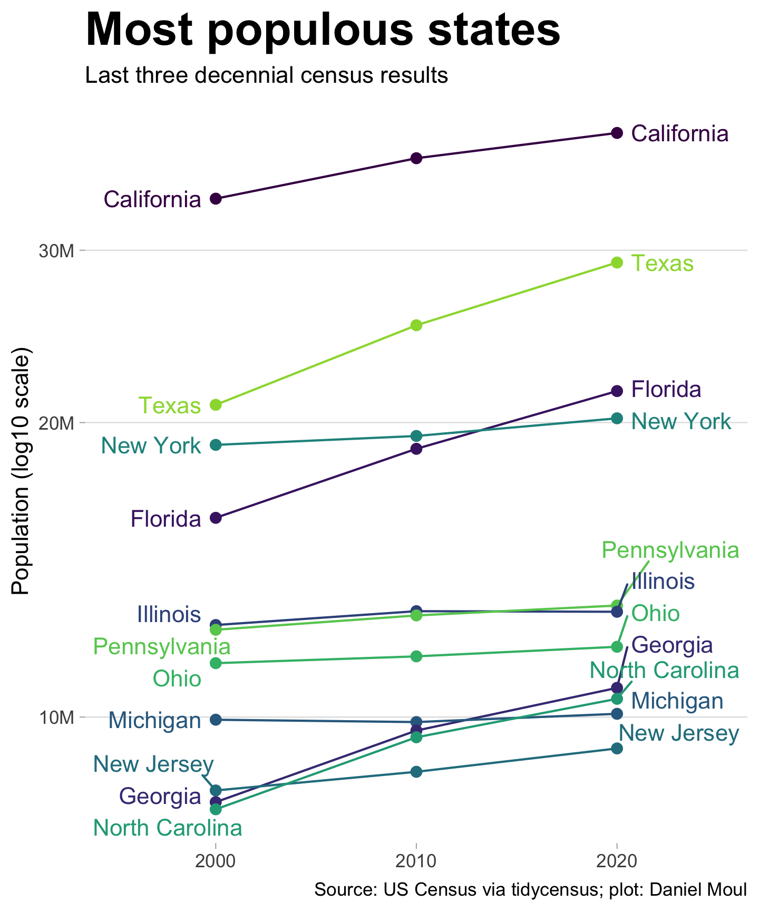

1 NC in context
North Carolina is the ninth most populous state in the USA as of the 2020 decennial census. One hundred counties descend from the heights of the Appalachian mountains in the west to the Atlantic Ocean in the east. The population has been growing faster than the national average as people move from other states to enjoy the temperate climate, lower cost of living compared to more populated coastal states, the attractions of the mountains and the coast, and the dynamic economies in the urban crescent that runs through the middle of the state.
1.1 Physical geography
The primary geological features of the South Atlantic states are larger than North Carolina: the southern Appalachian “Blue Ridge”, the Piedmont, the fall line abruptly marking the edge of the mid-Atlantic coastal plane, and the coast. Throughout the south Atlantic states, most rivers flow southeast to the coast .

The elevation varies from mountains over 6600 ft in the Blue Ridge to the vast coastal plane not much above sea level. The tallest mountain east of the Rockies is in North Carolina: Mt. Mitchell (6684 ft 2037 m).
The largest cities are in the urban crescent, which spans the Piedmont from Charlotte to Raleigh.

1.2 US state population and population growth
Over the twenty years from 2000 to 2020, North Carolina surpassed New Jersey and Michigan to become the ninth most populous state. Figure 1.4 shows NC and the subset of states with population larger than NC reported in the decennial censuses 2000-2020.

North Carolina grew faster than the national average as reported in the last two decennial census counts. Figure 1.5 shows the subset of states that grew faster than the national average in the ten years to 2010 or 2020.
In nearly all states the growth rate was lower in the ten years to 2020 compared to the ten years to 2010.
There were some exceptions:
| Twelve states and D.C. grew faster in the 10 years to 2020 |
||
| state | pct_change_2010 | pct_change_2020 |
|---|---|---|
1.3 North Carolina counties
North Carolina extends about 501 miles east to west and 189 miles north to south, with land area encompassing 48,711 square miles (126,161 km2). NC is ranked 28th in size among the states.1
The regional designations below approximately match those in Michael L. Walden’s North Carolina beyond the connected age: the Tar Heel State in 2050 with these differences:
- He drew ellipses, while I followed county boundaries. This greatly simplifies my work, since data sources provide county-level data.
- I excluded from the coastal region all counties that lack Atlantic coastline, including those bordering the Albemarle and Pamlico sounds. These counties’ economies and demographics more closely resemble their neighboring rural agricultural counties.
- I made the urban crescent “technology” region thinner, excluding mostly-rural counties that are experiencing some spill-over from adjacent urban areas.

For comparison:
1.4 North Carolina’s largest cities
The map above (Figure 1.7) includes the boundaries of the largest cities:
| NC cities with estimated population greater than 90K in 2020 | ||
| city | population | county |
|---|---|---|
| Charlotte | 876,694 | Mecklenburg |
| Raleigh | 468,977 | Wake, Durham |
| Greensboro | 299,556 | Guilford |
| Durham | 284,317 | Durham, Wake, Orange |
| Winston-Salem | 249,986 | Forsyth |
| Fayetteville | 208,530 | Cumberland |
| Cary | 175,635 | Wake, Chatham |
| Wilmington | 115,465 | New Hanover |
| High Point | 114,271 | Guilford, Davidson, Randolph, Forsyth |
| Concord | 105,936 | Cabarrus |
| Asheville | 94,855 | Buncombe, Henderson |
| Note: City boundaries and population (not metropolitan statistical areas (MSAs)) Source: NC OneMap ‘NCDOT City Boundaries’ |
||
1.5 Population density
Census tract boundaries reveal population patterns. Since the census bureau tries to keep tract population around 4000, the census tracts are smaller where population is more dense (that is, in cities). The density in outer suburbs and smaller cities is close to the state median. The urban regions have been expanding into formerly rural, agricultural areas within the same counties and in adjacent counties.

Nighttime light (radiance) is a good proxy for population density.2. The lights reveal the same pattern in North Carolina as in other states in the southeast: urban areas extend across county lines, and nearly every rural county has one at least town with higher density population than the surrounding area–presumably the county seat. The North Carolina urban crescent is particularly noticeable in Figure 1.11.